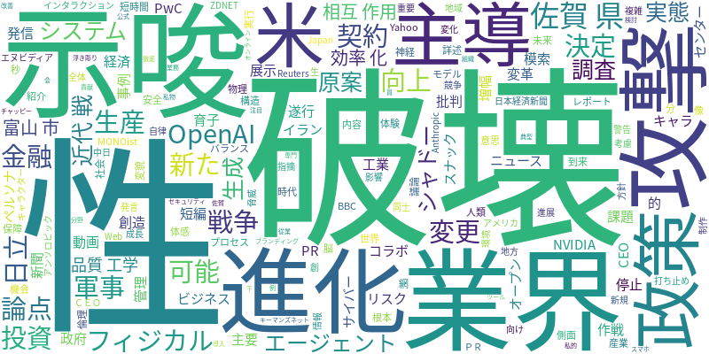

☁️ 今日のトレンドワード

📰 今日のピックアップニュース (10件)
AIがもたらす業界変革
PwCのレポートは、AIが主要業界にもたらす破壊と創造の側面を詳述。AI技術の進化がビジネスモデルや産業構造を根本から変え、新たな機会と課題を生み出す未来像を描いています。
AI主導の初戦争、近代戦の変革
イランへの攻撃作戦がAIによって短時間で遂行された事例を紹介。AIが近代戦に深く組み込まれ、意思決定や実行プロセスを主導する「AI主導の戦争」という新たな時代が到来したことを示唆しています。
OpenAI、軍事利用で契約変更
OpenAIが米政府との契約内容を変更。AIの軍事利用に対する批判を受けての決定であり、AI技術の倫理的な利用と安全保障とのバランスについて、議論が深まっています。
日立AI、フィジカルAIで進化
日立のAIペルソナがフィジカルAIとして進化し、「スナック育子」とのコラボ展示でその体験が可能に。AIが物理的な世界とインタラクションする技術の進展を示しています。
AI生産性向上、米金融政策の論点
AIによる生産性向上が、アメリカの金融政策の重要な論点となっていることを報じています。AIが経済全体に与える影響を考慮した政策決定が求められています。
NVIDIA CEO、AI企業への投資停止示唆
NVIDIAのCEOが、OpenAIやAnthropicといったAI企業への新規投資を停止する可能性を示唆。AI業界の成長と競争環境の変化を示唆する発言です。
AIエージェント、システム破壊リスク
AIエージェント同士の相互作用が、システム破壊やサイバー攻撃を増幅させるリスクについて警告。AIの自律性と複雑な相互作用がもたらす新たな脅威を指摘しています。
富山市、AI原案PRキャラ活用
富山市がAIを原案としてPRキャラクターを制作し、短編動画での情報発信に活用する方針。AIが地方創生や地域ブランディングに活用される事例として注目されます。
佐賀県、生成AIで品質工学効率化
佐賀県工業技術センターが、生成AIを活用して「品質工学」の効率化を模索。AIが専門分野における業務改善に貢献する可能性を示しています。
「シャドーAI」の利用実態調査
「シャドーAI」、すなわち組織の公式な管理下になく、従業員が私的に利用するAIツールについて、その利用実態を調査。AI導入におけるセキュリティや管理の課題を浮き彫りにしています。
本日のAI・テック業界は、AIの社会実装とそれに伴う影響の広がりが顕著でした。PwCのレポートが示すように、AIは主要産業に変革をもたらし、破壊と創造の波を生み出しています。特に、AIが軍事作戦を主導するという衝撃的なニュースは、AIの進化が現実の紛争にまで影響を及ぼす段階に入ったことを示唆しています。OpenAIが軍事利用に関する米政府との契約を変更したことは、AIの倫理的側面と安全保障のバランスを巡る議論の重要性を浮き彫りにしました。また、NVIDIA CEOの発言からは、AIエコシステムのダイナミズムと競争の激化が垣間見えます。一方で、日立のフィジカルAIや富山市のPRキャラ活用、佐賀県の品質工学へのAI導入といった事例は、AIが産業や地域社会に具体的なメリットをもたらす可能性を示しています。しかし、AIエージェントの相互作用がシステム破壊を招くリスクや、組織の管理下外でAIが利用される「シャドーAI」の存在は、AI導入における新たな課題とリスク管理の必要性を提起しています。AIはますます生活や社会に深く浸透し、その恩恵とリスクの両面を理解し、適切に対応していくことが求められています。